| 日付 | 2026年8月12日（水） - 2026年8月14日（金） | ||||||
|---|---|---|---|---|---|---|---|
| 山域 | 北アルプス | ||||||
| メンバー | 家族（妻） | ||||||
| 山行形態 | 2泊3日山小屋泊 | ||||||
| アクセス | 車 | ||||||
| ルート (Map) |
|
蓮華温泉を起点とし、白馬岳～雪倉岳～朝日岳を周回するコースは以前から狙っていた。
展望も花も良さそうだし、何より人が少なそうなのが素晴らしい。
7月の海の日連休にここを歩く計画を立てていたが、天候不順によりキャンセル。
結局、蓋を開けてみたらそこまで天候は悪化しなかったのだが。
自分の判断ミスでチャンスをつぶしてしまったが、改めてお盆の時期に
リベンジしてみることにする。
1日目
蓮華温泉への道を車で走っていると、パッと展望が広がったので車を停めてみる。
ヒワ平展望台という場所のようだ。
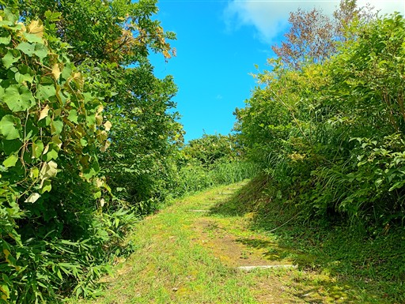
北アルプスの稜線が見える素晴らしい展望台。
この先に行く朝日岳周辺の稜線だ。
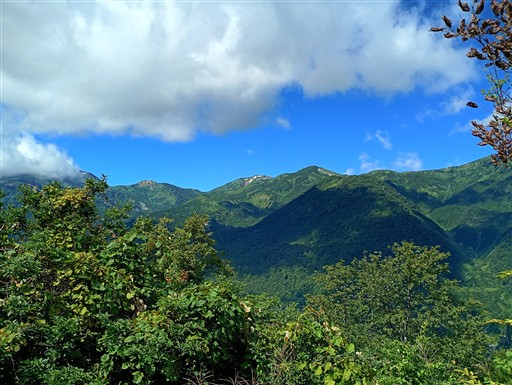
白馬岳方面は分厚い雲に覆われている。
本日は台風が通過したばかり。風が強く、独特の雲ができている。
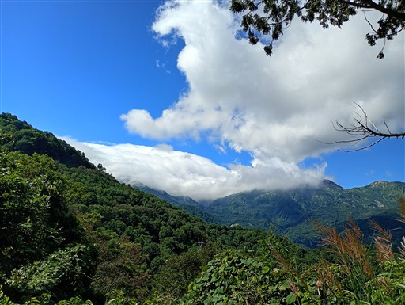
なんと海が見えている。日本海が近いんだと実感する。
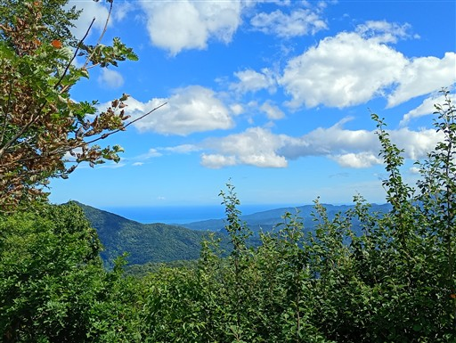
車を走らせて蓮華温泉の駐車場に到着。標高1470m。
車は7割ほど入っている。
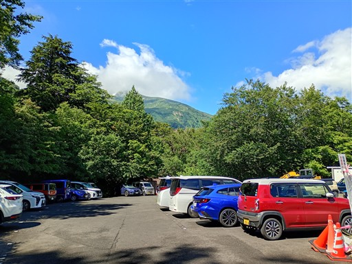
ヒワ平からの展望は素晴らしかったが、ここからの展望も申し分ない。
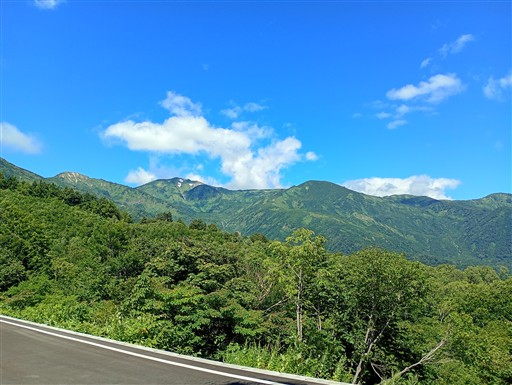
蓮華温泉ロッジ。下山後にここで温泉に入る予定だ。
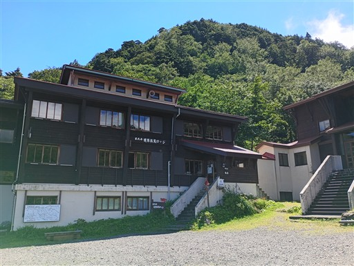
準備を整えて登山開始。
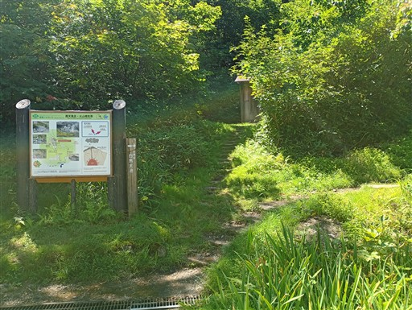
最初は樹林帯の中の地味な道。
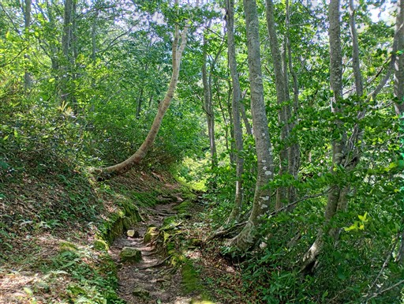
風がものすごく強い。風の音と木が揺れる音であまり落ち着かない。
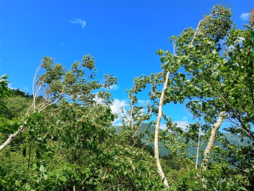
メスのクワガタを発見。
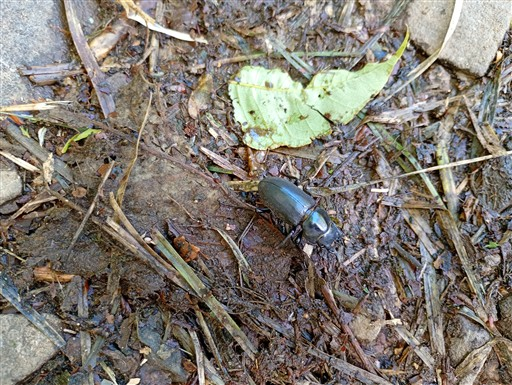
風は強いが樹林帯の中は安全だ。
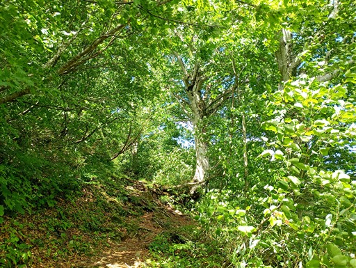
蓮華の森の標識。立派な木が立っている。
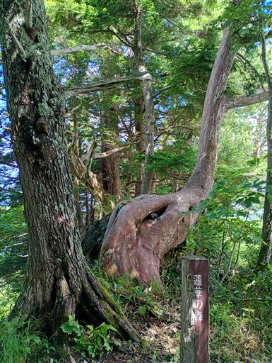
上空はどんよりしている。もうすぐ雲の中に入りそうだ。
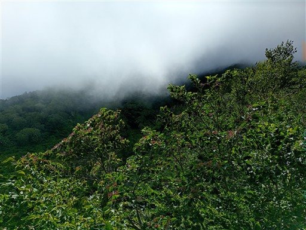
北の方は見事に晴れ渡っている。
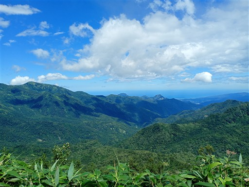
天狗の庭に到着。ここで昼食を取ろうと考えていたが、暴風が吹き荒れているため
ちょっと先の樹林帯の中で食べる。
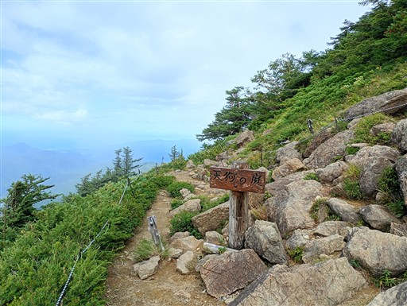
登山道は結構水たまりができている。昨日からだいぶ雨が降ったのだろう。
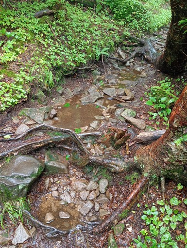
ダイモンジソウ。「大」の形をした美しい花だ。
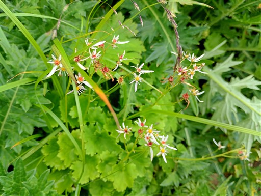
登山道は雲の中に入ってしまう。
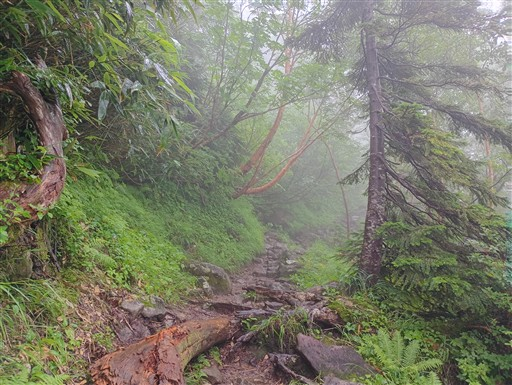
木の高さがだいぶ低くなってきた。
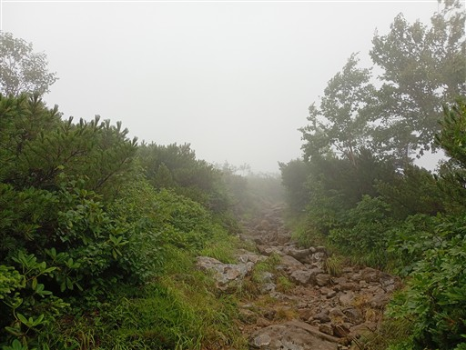
白馬大池の近くに出てくる。濃い霧で暴風が吹いているので体が濡れる。
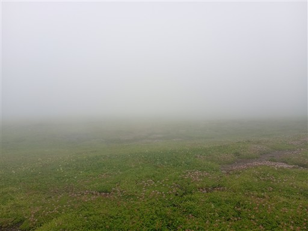
テント泊は大変そう。
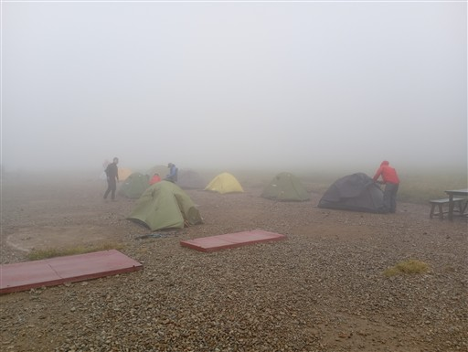
白馬大池小屋に駆け込む。
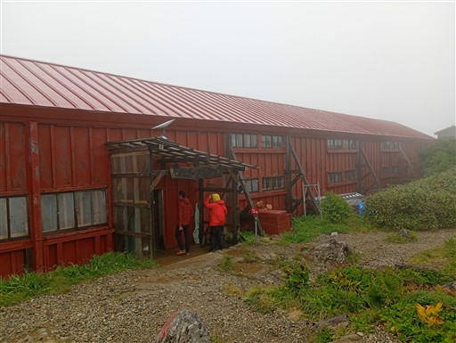
白馬大池は濃い霧のため全貌は分からない。
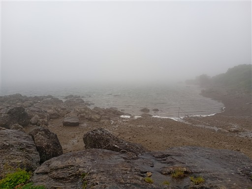
小屋の天気予報。明日は晴れそうだ。
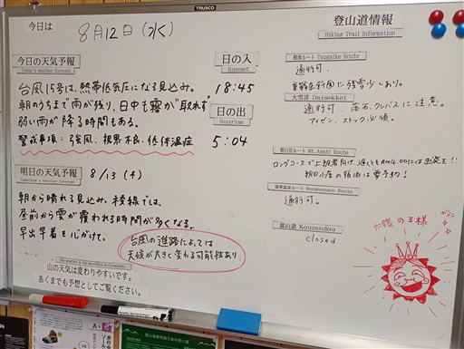
夕飯後、夕方になって雲がだいぶ取れてきた。
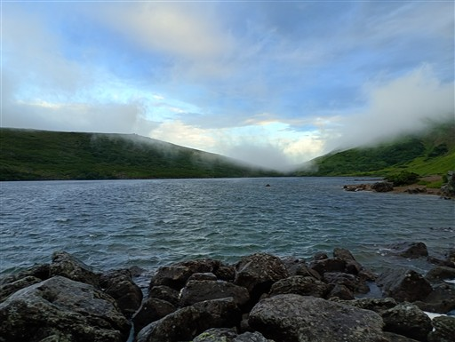
美しい白馬大池と周囲の景色が広がる。
明日は早立ちのため、本日中に白馬大池を眺められて良かった。
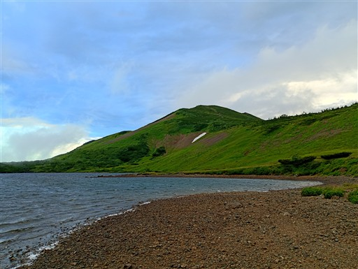
本日はここまで。小屋に戻って就寝。
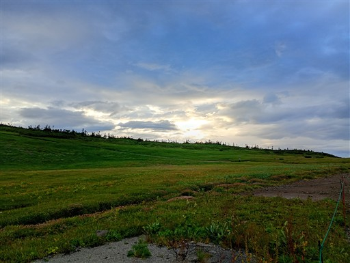